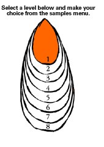
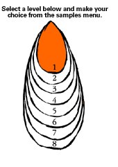

Level 1: Responding to Music in the Local Environment
PLANNING AND ASSESSMENT
Key Teaching and Learning Concepts
Listen and respond to:
Recorded music – this could involve the students singing and/or playing along with a tape or CD, talking about what they hear, moving to music, drawing the sounds heard, exploring and organising their own sounds in response to particular pieces of music.
Live musicians – these could include specialised school performers, groups of parents, groups of students, musicians like buskers, well-known community musicians who have been recorded, favourite popular artists.
Prior learning:
Students need to have had experience in hearing music both live In their community and have listened and responded to recorded music.
Suggested learning outcomes:
The students will:
- move in time with the music and/or respond to the context of the music through appropriate participation (CI);
- recognise music from their own community setting (UC);
- share ideas about aspects of the music and the performance – purposes, features and musical elements, performance settings (UC).
Possible learning experiences:
Focusing the students as an audience (in live or recorded context)
- Explore a range of ways to focus the student's listening by getting them to:
- listen for a range of sounds – loud/soft, high/low;
- watch what the performers do – eye contact, facial
expression;
- identify the different roles the musicians take – singer
lead guitarist, drummer;
- think about the part they liked and explain why;
- describe what they saw – types of instruments, how the
musicians played their instrument;
- identify different contexts that they may hear this music
in;
- compare different styles of music in terms of musical
elements – tempo, beat, rhythm, pitch, dynamics, timbre.
- Discuss the role of audience
[tip]
Exploring a range of response opportunities
- Students should be encouraged to respond in a variety of ways:
- sing along with the music
- play along with the music
- talk about what they like and why.
- talk about the sounds they hear
| – |
loud/soft |
| – |
high/low |
| – |
parts of the music that were silent |
| – |
parts where an individual instrument played/ parts where a group of instruments played |
| – |
sounds of different instruments |
| – |
how the music made them feel |
- move to the music
| – |
move to the beat of the music |
| – |
make movements that show how the music makes them feel |
| – |
make particular movements for different instruments/sounds, or patterns |
Ask
What instruments can you hear/see?
Show me how your body could move to this music?
Can you show with your hands when the melody goes high or low?
How can we keep the beat of this music?
Can you think of a word that describes the music?
How do the musicians play their instruments?
How do the musicians make different sounds with their instrument?
Show me what the musicians look like when they play their instruments?
What other places have you heard this sort of music being played?
Do you like this music? How does it make you feel?
Selection of music
- Provide opportunities for students to listen to a range of music in both live and recorded settings.
- Look for variety in:
- style/genre e.g., rock, jazz, classical, hip hop, waiata a ringa, traditional Irish;
- instrumentation – solo, groups, orchestra, band;
- shape – verse/chorus, contrasting sections – slow, fast;
- texture – the degree of thinness and thickness of the music.
- Examples of pieces of music that could be used:
Assessment approaches
Formative: Refer to "ask" questions included throughout. Use these as a means to monitor and provide feedback to students on their progress.
Key Question – How well can the student respond through movement/participate in responding appropriately to the music?
Criteria for assessment could include:
- movement to show awareness of beat, of patterns and shapes as directed
- singing and playing along in tune and in time, as appropriate to the setting
Key question – Can the students recognise music that they hear in their own community setting?
Criteria for assessment could include:
- recognition of a particular piece of music
- identification of the settings that a particular music can be heard in e.g., church, particular celebrations, concerts
Key question – How well can the students share their thoughts about the music they are experiencing?
Criteria for assessment could include:
- ideas about the purposes of the music including performance settings e.g., Why we have this music and how it makes us feel?
- features and musical elements identified and described e.g., How the instruments are being played? What the musicians are doing? Where they are doing it?
Possible strategies for assessment
Observation, discussion, reflective questioning, conferencing (teacher/student, student/student)
[Back
To Top]
|

 
